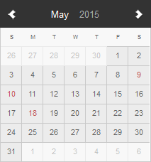

<link rel="import" href="../sp-space/sp-space-libs.html">
<link rel="import" href="../sp-breadcrumb/sp-breadcrumb.html">

<dom-module id="sp-app-instance">
  <template>
    <sp-notifier id="msgNotHandled" type="warning">
      L'application <b><span>{{msgInstanceName}}</span></b> n'est pas encore prise en charge.
    </sp-notifier>
    <sp-notifier id="msgNotFound" type="error">
      Il n'existe pas d'instance d'application ayant l'identifiant <b><span>{{msgInstanceId}}</span></b>.
    </sp-notifier>

    <sp-service-ajax id="applicationInstanceRequester"
                     path="[[getApplicationInstanceUri(context.instance.id)]]"
                     last-response="{{applicationInstance}}"
                     on-error="_applicationInstanceNotFound"></sp-service-ajax>

    <div class="main wrapper flexitem-fluid flexbox-h">
      <sp-space-menu class="flexbox-v" context="[[context]]"></sp-space-menu>
      <div class="main wrapper flexitem-fluid application">
        <section data-field="app-section" class="with-aside-app">
          <sp-breadcrumb context="[[context]]"></sp-breadcrumb>

          <!--<aside class="aside-app" id="aside-app-fixed">-->
          <!---->
          <!--</aside>-->

          <div class="application-content">
            <template is="dom-if" if="{{isApplicationNameEqualTo(applicationInstance, 'blog')}}">
              <sp-blog-home context="[[context]]"></sp-blog-home>
            </template>
          </div>

          <footer>
            <div class="application-footer">--</div>
          </footer>
        </section>
      </div>
    </div>
  </template>
</dom-module>
<script>
  (function() {

    Polymer({
      is : 'sp-app-instance',

      behaviors : [SpaceBehavior, ApplicationInstanceBehavior, NavigationContextBehavior],

      properties : {

        context : {
          type : Object
        },

        applicationInstance : {
          type : Object, notify : true, observer : '_applicationInstanceChanged'
        },

        isApplicationInstanceFound : {
          type : Boolean, notify : true, readOnly : true
        }
      },

      observers : ['_instanceIdChanged(context.instance.id)'],

      created : function() {
        this.handledApplications = [];
        var map = this.handledApplications;
        map.blog = true;
      },

      _instanceIdChanged : function() {
        this.$.msgNotHandled.hide();
        this.$.msgNotFound.hide();
        if (this.isValidApplicationInstanceId(this.context.instance.id)) {
          this.$.applicationInstanceRequester.send();
          console.log("Loading data about the current valid application...");
        }
      },

      _applicationInstanceNotFound : function() {
        this.applicationInstance = null;
        this.msgInstanceId = this.context.instance.id;
        this.$.msgNotFound.show();
        this._applicationInstanceChanged();
      },

      _applicationInstanceChanged : function() {
        this._setIsApplicationInstanceFound(this.isValidApplicationInstance(this.applicationInstance));
        if (this.isApplicationInstanceFound) {
          this._loadParentSpaces(this.applicationInstance, function() {
            this.setContextApplicationInstance(this.applicationInstance);
          }.bind(this));
          this._verifyApplicationNotHandled();
        } else {
          this.setContextApplicationInstance(this.unknownApplicationInstance);
        }
      },

      _verifyApplicationNotHandled : function() {
        var isNotHandled = this.isValidApplicationInstance(this.applicationInstance) &&
            !this.handledApplications[this.applicationInstance.name];
        if (isNotHandled) {
          this.msgInstanceName = this.applicationInstance.label;
          this.$.msgNotHandled.show();
        }
        return isNotHandled;
      },

      _isApplicationNotFound : function(lastError) {
        return (typeof lastError === 'object');
      }
    });
  })();
</script>
